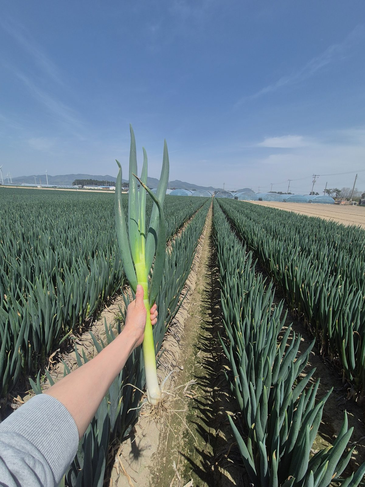

Operations Story
도시의 납품 시간은 기다려주지 않습니다.
작은 발주와 반복되는 문제를 하나씩 정리하며
SEED IT의 운영 기준은 만들어졌습니다.
Result
일 운영 물량은 크게 늘었습니다.
하지만 숫자보다 중요한 것은,
그 성장을 만든 운영 방식입니다.
Growth Trajectory
운영 변화 요약
숫자는 결과입니다.
그 과정에는 품질·산지·출고 기준을 다시 세운 시간이 있었습니다.
Claim Response
대체품만 보내고 끝내지 않았습니다.
담당자가 사업장을 방문해 문제 원물을 회수하고,
원인과 조치 내용을 직접 설명했습니다.
SEED IT 대응
Back to the Origin
같은 품목, 같은 지역이라도 어떤 농가가 어떤 밭에서 경작했는지에 따라 입고 품질과 작업 수율은 달라졌습니다.
SEED IT은 이 차이를 데이터로 남겨 다음 계약과 수확 기준에 반영했습니다.

농가 · 밭 단위 품질 데이터From Response to Trust
1개월 밀착관리
클레임이 발생한 사업장은 1개월간 담당자를 지정하고, 출하 책임을 분명히 했습니다. 같은 문제가 반복되지 않도록 매일 관리했습니다.
당일 입고 · 당일 발송
하루 포장 재고가 남지 않도록 시간 단위로 발주량을 확인했습니다. 필요한 만큼만 선별·포장하고, 당일 입고된 원물이 당일 출고되도록 운영했습니다.
재고 리스크 최소화
Response
대응
Quality
품질 개선
Trust
신뢰
Together
동반 성장
더 안정적인 품질이,
더 큰 발주로 이어졌습니다.
그 신뢰가 반복되며
SEED IT과 고객사의 동반 성장으로 이어졌습니다.